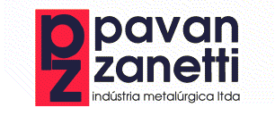

Política e Compromisso de Qualidade
A Incepi do Brasil busca ser uma empresa competitiva no segmento de embalagens, buscando melhoria contínua na qualidade e mantendo o foco:
- Cumprimento dos requisitos aplicáveis;
- Satisfação dos seus clientes;
- Fornecimento de produtos de qualidade;
- Melhoria contínua de seus processos.

A Direção.
Considerações Técnicas
- As nossas embalagens possuem alta resistência ao fenômeno de tensofissuramento (stress-cracking), permitindo o envase de produtos tensoativos, tais como detergentes e outros produtos químicos;
- Apresentam uma faixa de temperatura de trabalho entre - 25º C e + 90º C, o que permite uma boa performance da embalagem tanto no armazenamento em freezer, quanto no envase a quente;
- As matérias-primas utilizadas na fabricação das embalagens são adquiridas diretamente da indústria petroquímica, o que nos dá garantia de reprodutibilidade do processo e qualidade final;
- Os "grades" de PEAD e PP utilizados são aprovados para utilização na indústria alimentícia e farmacêutica, possuindo Certificado de aprovação do Instituto Adolfo Lutz e registro no DINAL;
- A cor padrão é sem pigmentação (Natural). Cores especiais conforme padrão do cliente, mediante solicitação prévia;
- Embalagens com especial resistência ao intemperismo (Resistência ao UV), podem ser fabricadas mediante solicitação.
Considerações de Projeto
- Dimensões: projetadas para otimização de sistemas de paletização (Área, Estabilidade, Empilhamento);
- Bocal: projetado para facilitar sua total adaptação aos vários sistemas de enchimento e permitindo total esvaziamento da embalagem, evitando a sobra de resíduos do produto embalado em seu interior;
- Alça: especialmente projetada para facilitar o manuseio nas linhas de produção e no consumidor final;
- Fundo: projetado com o objetivo de proporcionar maior estabilidade da embalagem, fator muito importante em linhas automáticas de enchimento;
- Linhas gerais suaves: evitando pontos de excessivo congelamento de tensões, o que garante um bom desempenho mecânico das embalagens durante um período mais longo;
- Tampa com lacre: a qual garante uma boa vedação e inviolabilidade da embalagem.